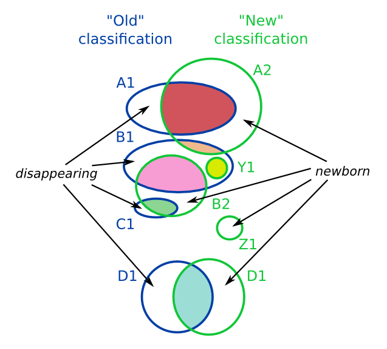

We provide Stable IDs for both Families and GeneTrees. The IDs are kept from one release to the other depending on the genes present in the Family or Gene Tree. In particular, we do not rely on the underlying alignment, the tree structure or the resulting orthologs to assign stable IDs to GeneTrees.
The format of the Stable IDs are ENSFMRRRRXXXXXXXXXX and ENSGTRRRRXXXXXXXXXX respectively, where RRRR corresponds to the Ensembl release number when the stable ID was first assigned and XXXXXXXXXX is a number. For instance, ENSFM00550000743120 is a family first described in Ensembl 55 and ENSGT00560000077204 is a GeneTree first described in Ensembl 56.
This is a generic description of the Stable ID mapping algorithm. We use it to track stable IDs from release to release, but we also use it to match Ensembl GeneTrees to TreeFam entries.
The algorithm takes two different classification schemes (i.e. Families from the current release and Families from the forthcoming one) over a given set of members. It is assumed that the classifications are somehow related, i.e. they tend to group members similarly. One is called "old" and the other "new", given an order of succession.
The comparison requires a common namespace for the members used in both classifications. The algorithm then infers how the names of the classes in two different classifications are related.
Member Namespaces:
With respect to the two given classifications, we have three kinds of members:
The relationship between classes is inferred from the SHARED members, but the other two kinds are also counted by the algorithm.
The algorithm iterates through the "new" classes in the descending order of their sizes, trying to reuse a name of one of the "old" classes from where the SHARED members come to the "new" class, and make it the name of the "new" class, if it has not been taken yet.
If 100% SHARED members of the "old" class become 100% SHARED members of the new class, we call this case an EXACT reuse. If there was only one SHARED member, we call it an EXACT_o for "orphan".
Otherwise we have a split/join situation and iterate through the "contributors" (the "old" classes from which the SHARED members come from) in the decreasing order of the sizes of the shared parts. This ordering ensures that both in cases of joins and splits we are reusing the name of the biggest contributor.
In this example diagram:

A version increase indicates that the SHARED members have changed for that class. The version is kept the same if it is an EXACT reuse case. For example, in the GeneTrees:
a) If a genetree with 50 members in release 56 turns into a genetree with 49+2 members in release 57, 49 being SHARED and 2 being NEWBORN, the version will change.
b) If a genetree with 50 members in release 56 turns into a genetree with 48+2 members in release 57, 48 being SHARED and 2 being NEWBORN, the version will change, even though the total number of members is the same.
c) If a genetree with 48+2 members in release 56 turns into a genetree with 48 members in release 57, 48 being SHARED and 2 being DISAPPEARING (e.g. updated genebuild that deletes some members), the version will be the same.
d) If a genetree with 48+2 members in release 56 turns into a genetree with 48+3 members in release 57, 48 being SHARED, 2 being DISAPPEARING and 3 being NEWBORN, the version will be the same.